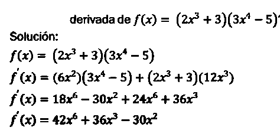

La derivada de un producto de dos funciones es equivalente a la suma entre el producto de la primera funcion sin derivar y la derivada de la segunda funcion y el producto de la derivada de la primera funcin por la segunda funcion.
Formula;
Esta reglas es util cuando se tiene una funcion formada de la multiplicacion de polinomios
Ejemplo:

Reglas del cociente
La derivada de un cociente de dos funciones es la funcion ubicada en el denominador por la derivada del numerador menos la derivada de la funcion en el denominador por la funcion del numerador sin derivar, todo sobre la función del denominador al cuadrado.
Esta regla es util cuando se tiene una funcion formada de la division de polinomios